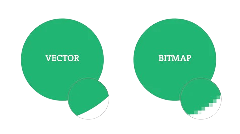
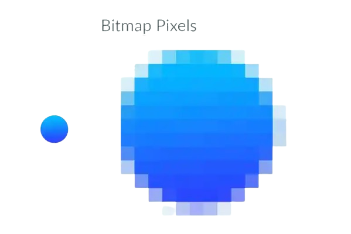

Afbeeldingen kunnen op verschillende manieren digitaal worden opgeslagen.
Daarom is het slim om ze op een manier te opslaan die zo min mogelijk data kost.
De kwaliteit en het soort afbeelding spelen hierbij een belangrijke rol. Er zijn twee hoofdtypen afbeeldingen, bitmapafbeeldingen en vectorafbeeldingen.

Bitmapafbeeldingen
Bitmapafbeeldingen zijn opgebouwd uit duizenden pixels met verschillende kleuren. Als je nog wilt weten wat een pixel is en hoe ze werken dan raad ik je aan om de pagina Kleurmodellen te checken! Deze pixels komen bij elkaar en vormen een afbeelding en hoe meer pixels er zijn, hoe hoger en scherper de afbeelding eruitziet. Het gebruiken van bitmapafbeeldingen heeft ook nadelen zoals wanneer je de afbeelding vergroot, dat pixels zichtbaar zijn en dat de afbeelding wazig eruitziet. Daarnaast kunnen bitmapafbeeldingen veel ruimte innemen.

Vectorafbeeldingen
Een vectorafbeelding werkt heel anders. Daar worden in plaats van pixels vormen gebruikt. Hierdoor wordt de afbeelding niet wazig als je het vergroot. Vectorafbeeldingen hebben ook nadelen zoals bij bitmapafbeeldingen. Een nadeel van vectorafbeeldingen is dat ze wat minder geschikt zijn voor het weergeven van realistische foto's, omdat de wereld te veel unieke/originele details heeft om het eenvoudig met een vorm weer te geven.